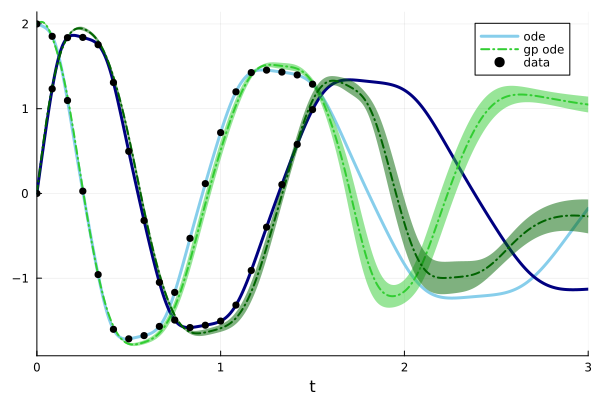

Spiral ODE

You are seeing the HTML output generated by Documenter.jl and Literate.jl from the Julia source file. The corresponding notebook can be viewed in nbviewer.
Setup
Load necessary packages
using Plots
using LinearAlgebra
using GPDiffEq
using Optimization, OptimizationOptimJL
using ZygoteFirst we define an ODE and generate some data points from it.
u0 = [2.0; 0.0]
datasize = 19
tspan = (0.0, 3.0)
datatspan = (0.0, 1.5)
datatsteps = range(datatspan[1], datatspan[2]; length=datasize)
function trueODEfunc(u, p, t)
du = similar(u)
true_A = [-0.1 2.0; -2.0 -0.1]
return du .= ((u .^ 3)'true_A)'
end
prob_trueode = ODEProblem(trueODEfunc, u0, tspan)
sol = solve(prob_trueode, Tsit5())
ode_data = Array(sol(datatsteps))
traj = sol(datatsteps);
p = plot(sol)
scatter!(p, datatsteps, ode_data'; markersize=4, color=:black, label=["data" ""])Gradient data
For this example we get gradient observations from our trajectory data by interpolating it with a GP and differentiating it.
First, we set all necessary variables, which includes the Multi-Output Kernel and the inputs and outputs. See also the KernelFunctions.jl Documentation on Multiple Outputs.
scaker = with_lengthscale(SqExponentialKernel(), 1.0)
moker = IndependentMOKernel(scaker)
x, y = prepare_isotopic_multi_output_data(collect(datatsteps), ColVecs(ode_data))
σ_n = 1e-3We define a finite GP
g = GP(moker)
gt = g(x, σ_n)
gt_post = posterior(gt, y)Now we use the following convenience functions to a loglikelihood loss function and a function to rebuild the gp with the optimal parameters. Note that we use optimize over the logarithm of the parameters, to ensure their positivity. For more details see this KernelFunctions.jl example
loss, buildgppost = gp_negloglikelihood(gt, x, y)
p0 = log.([1.0])
unfl(x) = exp.(x)Optimizing:
adtype = Optimization.AutoZygote()
optf = Optimization.OptimizationFunction((x, p) -> (loss ∘ unfl)(x), adtype)
optprob = Optimization.OptimizationProblem(optf, p0)
optp = Optimization.solve(optprob, NelderMead(); maxiters=300)
optparams = unfl(optp)1-element Vector{Float64}:
5.305029832442984Now we can build a FiniteGP with the optimized parameters,
optpost = buildgppost(optparams)which fits the data much better than the initial GP:
t_plot = range(datatspan...; length=100)
t_plot_mo = MOInput(t_plot, 2)
opt_pred_mean = mean(optpost, t_plot_mo)
opt_pred_mean = reshape(opt_pred_mean, :, 2)
pred_mean = mean(gt_post, t_plot_mo)
pred_mean = reshape(pred_mean, :, 2)
plot(sol; label=["ode" ""], color=[:skyblue :navy], linewidth=3.5)
plot!(
t_plot,
pred_mean;
label=["gp" ""],
color=[:limegreen :darkgreen],
linewidth=2.5,
linestyle=:dashdot,
)
plot!(
t_plot,
opt_pred_mean;
label=["opt. gp" ""],
color=[:tomato :firebrick],
linewidth=2.5,
linestyle=:dash,
)
scatter!(datatsteps, ode_data'; markersize=4, color=:black, label=["data" ""])GPs are closed under linear operators, which means that we can very easily obtain derivative information along the trajectory.
deriv_post = differentiate(optpost)
du_pred_mean = mean(deriv_post, x)
du_pred_mean = reshape_isotopic_multi_output(du_pred_mean, deriv_post)
du = trueODEfunc.(eachcol(ode_data), 0, 0)
sf = maximum(norm.(du))
quiver(
ode_data[1, :],
ode_data[2, :];
quiver=(getindex.(du, 1) / sf, getindex.(du, 2) / sf),
label="true gradients",
)
quiver!(
ode_data[1, :],
ode_data[2, :];
quiver=(getindex.(du_pred_mean, 1) / sf, getindex.(du_pred_mean, 2) / sf),
label="predicted gradients",
)This leaves us with u and udot pairs as in the input and output for the next GP that will define the ODE.
u = ColVecs(ode_data)
udot = du_pred_meanBuilding a model
Now we build a model for the the ODE.
scaker = with_lengthscale(SqExponentialKernel(), ones(2))
moker = IndependentMOKernel(scaker)
u_mo, y = prepare_isotopic_multi_output_data(u, udot)
σ_n = 1e-4compute the posterior GP
gpfun = GP(moker)
fin_gpfun = gpfun(u_mo, σ_n)
post_gpfun = posterior(fin_gpfun, y)AbstractGPs.PosteriorGP{AbstractGPs.GP{AbstractGPs.ZeroMean{Float64}, KernelFunctions.IndependentMOKernel{KernelFunctions.TransformedKernel{KernelFunctions.SqExponentialKernel{Distances.Euclidean}, KernelFunctions.ARDTransform{Vector{Float64}}}}}, NamedTuple{(:α, :C, :x, :δ), Tuple{Vector{Float64}, LinearAlgebra.Cholesky{Float64, Matrix{Float64}}, KernelFunctions.MOInputIsotopicByFeatures{SubArray{Float64, 1, Matrix{Float64}, Tuple{Base.Slice{Base.OneTo{Int64}}, Int64}, true}, KernelFunctions.ColVecs{Float64, Matrix{Float64}, SubArray{Float64, 1, Matrix{Float64}, Tuple{Base.Slice{Base.OneTo{Int64}}, Int64}, true}}, Int64}, Vector{Float64}}}}(AbstractGPs.GP{AbstractGPs.ZeroMean{Float64}, KernelFunctions.IndependentMOKernel{KernelFunctions.TransformedKernel{KernelFunctions.SqExponentialKernel{Distances.Euclidean}, KernelFunctions.ARDTransform{Vector{Float64}}}}}(AbstractGPs.ZeroMean{Float64}(), Independent Multi-Output Kernel
Squared Exponential Kernel (metric = Distances.Euclidean(0.0))
- ARD Transform (dims: 2)), (α = [26.299072516798237, 37.958642543535255, -16.77147388720557, 6.9039427734896375, -33.9184364272329, 8.339421352506076, -8.107379122378676, -0.6857713934549655, -5.388345452076144, 2.404603905483877, -0.5462985856278377, -3.9054462168389876, 3.2481706823012666, -6.50325235120365, 0.5860650926322835, 1.356343268981209, -8.705627891387897, -11.671173028608033, 11.723993459073037, 8.809514126903059, 0.06153812535462716, -7.299220232625666, 2.684048812729418, 16.12574463789271, -4.294326147387075, -22.400209312051032, 20.106070254427642, 22.392012403829927, 11.108447426226995, -15.851093717998873, -98.71004317303651, 29.4780322640062, 154.84664378578213, -91.06618145674325, -206.26499193607822, 75.26537196985917, 144.15454513648888, -42.703051167574664], C = LinearAlgebra.Cholesky{Float64, Matrix{Float64}}([1.0000499987500624 0.0 0.4619606778188927 0.0 0.12269562472437252 0.0 0.026218429224843662 0.0 0.0027021624117434797 0.0 0.0006429232411829657 0.0 0.0008873792232310664 0.0 0.0010990572662038834 0.0 0.0009882486063107268 0.0 0.0021679723326851145 0.0 0.011652074801966224 0.0 0.05059113039230501 0.0 0.14142544228977091 0.0 0.30471924660177796 0.0 0.5611988893969765 0.0 0.7965186761621638 0.0 0.8464824686465033 0.0 0.7056264528780858 0.0 0.4762698637032939 0.0; 0.0 1.0000499987500624 0.0 0.4619606778188927 0.0 0.12269562472437252 0.0 0.026218429224843662 0.0 0.0027021624117434797 0.0 0.0006429232411829657 0.0 0.0008873792232310664 0.0 0.0010990572662038834 0.0 0.0009882486063107268 0.0 0.0021679723326851145 0.0 0.011652074801966224 0.0 0.05059113039230501 0.0 0.14142544228977091 0.0 0.30471924660177796 0.0 0.5611988893969765 0.0 0.7965186761621638 0.0 0.8464824686465033 0.0 0.7056264528780858 0.0 0.4762698637032939; 0.4619837752753616 0.0 0.8869567814437799 0.0 0.6412430398763515 0.0 0.1631244352726156 0.0 0.017496623874165746 0.0 0.0025174985957944164 0.0 0.0010055793192125656 0.0 8.799048084102786e-5 0.0 -0.00027727159662348276 0.0 -0.0008455426756255377 0.0 -0.004823282243078161 0.0 -0.02125900310773853 0.0 -0.0598178450420097 0.0 -0.12361141746266345 0.0 -0.18878065972837538 0.0 -0.13989315727281265 0.0 0.10412553451032715 0.0 0.4525716703809803 0.0 0.6848218415387698 0.0; 0.0 0.4619837752753616 0.0 0.8869567814437799 0.0 0.6412430398763515 0.0 0.1631244352726156 0.0 0.017496623874165746 0.0 0.0025174985957944164 0.0 0.0010055793192125656 0.0 8.799048084102786e-5 0.0 -0.00027727159662348276 0.0 -0.0008455426756255377 0.0 -0.004823282243078161 0.0 -0.02125900310773853 0.0 -0.0598178450420097 0.0 -0.12361141746266345 0.0 -0.18878065972837538 0.0 -0.13989315727281265 0.0 0.10412553451032715 0.0 0.4525716703809803 0.0 0.6848218415387698; 0.12270175935224686 0.0 0.6254354167350377 0.0 0.7575309548022654 0.0 0.6027681044254901 0.0 0.14415483657412623 0.0 0.027726007191191854 0.0 0.009277249202049812 0.0 0.0024895172993879304 0.0 0.0006588141720958554 0.0 0.0007580808186849411 0.0 0.0032063003716316235 0.0 0.012376965420441147 0.0 0.032300169350494144 0.0 0.06430671634799454 0.0 0.09759303562741692 0.0 0.09096366680667207 0.0 0.05225245325011212 0.0 0.07331608185482877 0.0 0.24656641134415097 0.0; 0.0 0.12270175935224686 0.0 0.6254354167350377 0.0 0.7575309548022654 0.0 0.6027681044254901 0.0 0.14415483657412623 0.0 0.027726007191191854 0.0 0.009277249202049812 0.0 0.0024895172993879304 0.0 0.0006588141720958554 0.0 0.0007580808186849411 0.0 0.0032063003716316235 0.0 0.012376965420441147 0.0 0.032300169350494144 0.0 0.06430671634799454 0.0 0.09759303562741692 0.0 0.09096366680667207 0.0 0.05225245325011212 0.0 0.07331608185482877 0.0 0.24656641134415097; 0.026219740113533504 0.0 0.1567962074202888 0.0 0.5644347929751523 0.0 0.7806879177195415 0.0 0.6705693052425005 0.0 0.2722313602452271 0.0 0.10608536365918658 0.0 0.027031737357260516 0.0 0.0050074749266966565 0.0 0.0019235489029438065 0.0 0.0012626266942816092 0.0 -0.002825667281312513 0.0 -0.013472579685925714 0.0 -0.02966708575212247 0.0 -0.04379739668260767 0.0 -0.03009077526473488 0.0 0.01510010613412035 0.0 0.050685913552187836 0.0 0.05225727916312493 0.0; 0.0 0.026219740113533504 0.0 0.1567962074202888 0.0 0.5644347929751523 0.0 0.7806879177195415 0.0 0.6705693052425005 0.0 0.2722313602452271 0.0 0.10608536365918658 0.0 0.027031737357260516 0.0 0.0050074749266966565 0.0 0.0019235489029438065 0.0 0.0012626266942816092 0.0 -0.002825667281312513 0.0 -0.013472579685925714 0.0 -0.02966708575212247 0.0 -0.04379739668260767 0.0 -0.03009077526473488 0.0 0.01510010613412035 0.0 0.050685913552187836 0.0 0.05225727916312493; 0.0027022975164865326 0.0 0.0167670419768682 0.0 0.12075288277522114 0.0 0.6133222655245567 0.0 0.727559452161941 0.0 0.7539912997436676 0.0 0.3676121836397612 0.0 0.09802596724534325 0.0 0.017626445403528784 0.0 0.0049468055443449965 0.0 0.003058600725246441 0.0 0.0037030403665224503 0.0 0.008586154840786505 0.0 0.01763992428488551 0.0 0.025791872918990516 0.0 0.017488618066670566 0.0 -0.009668456532850792 0.0 -0.0318415023820676 0.0 -0.03314009053855562 0.0; 0.0 0.0027022975164865326 0.0 0.0167670419768682 0.0 0.12075288277522114 0.0 0.6133222655245567 0.0 0.727559452161941 0.0 0.7539912997436676 0.0 0.3676121836397612 0.0 0.09802596724534325 0.0 0.017626445403528784 0.0 0.0049468055443449965 0.0 0.003058600725246441 0.0 0.0037030403665224503 0.0 0.008586154840786505 0.0 0.01763992428488551 0.0 0.025791872918990516 0.0 0.017488618066670566 0.0 -0.009668456532850792 0.0 -0.0318415023820676 0.0 -0.03314009053855562; 0.0006429553865414109 0.0 0.0025299177080974535 0.0 0.022696521021576464 0.0 0.2296676085399615 0.0 0.735166114125785 0.0 0.5972534836948615 0.0 0.6828950347841651 0.0 0.30705463939705857 0.0 0.0790940651476709 0.0 0.022746657444985094 0.0 0.009796080429416248 0.0 0.002386016320785648 0.0 -0.0039508617736485445 0.0 -0.010492708491930207 0.0 -0.015485097032190833 0.0 -0.00922712046183851 0.0 0.009629844241618089 0.0 0.025192617746194794 0.0 0.027411718075469153 0.0; 0.0 0.0006429553865414109 0.0 0.0025299177080974535 0.0 0.022696521021576464 0.0 0.2296676085399615 0.0 0.735166114125785 0.0 0.5972534836948615 0.0 0.6828950347841651 0.0 0.30705463939705857 0.0 0.0790940651476709 0.0 0.022746657444985094 0.0 0.009796080429416248 0.0 0.002386016320785648 0.0 -0.0039508617736485445 0.0 -0.010492708491930207 0.0 -0.015485097032190833 0.0 -0.00922712046183851 0.0 0.009629844241618089 0.0 0.025192617746194794 0.0 0.027411718075469153; 0.0008874235910830593 0.0 0.0013018397039014306 0.0 0.007781501733617772 0.0 0.0885988918193414 0.0 0.339954659970823 0.0 0.7141779126573086 0.0 0.6223131715941971 0.0 0.751607244950626 0.0 0.3832377988274615 0.0 0.16233559103943518 0.0 0.07876507058636567 0.0 0.032033877763256474 0.0 0.012149869856676675 0.0 0.00938280154801046 0.0 0.011565341017725144 0.0 0.00971415602006578 0.0 0.000898582222186281 0.0 -0.007763626223691651 0.0 -0.009306905542729317 0.0; 0.0 0.0008874235910830593 0.0 0.0013018397039014306 0.0 0.007781501733617772 0.0 0.0885988918193414 0.0 0.339954659970823 0.0 0.7141779126573086 0.0 0.6223131715941971 0.0 0.751607244950626 0.0 0.3832377988274615 0.0 0.16233559103943518 0.0 0.07876507058636567 0.0 0.032033877763256474 0.0 0.012149869856676675 0.0 0.00938280154801046 0.0 0.011565341017725144 0.0 0.00971415602006578 0.0 0.000898582222186281 0.0 -0.007763626223691651 0.0 -0.009306905542729317; 0.0010991122176934405 0.0 0.0005857649933417739 0.0 0.0020771592181015254 0.0 0.022647121325912355 0.0 0.08980975769284483 0.0 0.2647290186469852 0.0 0.7163485482448093 0.0 0.5749406746073474 0.0 0.7782548946850978 0.0 0.5405279503578747 0.0 0.2965348985754925 0.0 0.11847318760327925 0.0 0.03375044613998764 0.0 0.007737726030787262 0.0 0.0011651634349340585 0.0 0.0015822554964148895 0.0 0.005387135837008778 0.0 0.00824933211472081 0.0 0.007698477750692672 0.0; 0.0 0.0010991122176934405 0.0 0.0005857649933417739 0.0 0.0020771592181015254 0.0 0.022647121325912355 0.0 0.08980975769284483 0.0 0.2647290186469852 0.0 0.7163485482448093 0.0 0.5749406746073474 0.0 0.7782548946850978 0.0 0.5405279503578747 0.0 0.2965348985754925 0.0 0.11847318760327925 0.0 0.03375044613998764 0.0 0.007737726030787262 0.0 0.0011651634349340585 0.0 0.0015822554964148895 0.0 0.005387135837008778 0.0 0.00824933211472081 0.0 0.007698477750692672; 0.0009882980175057931 0.0 0.00021060407309793713 0.0 0.0004425274274691109 0.0 0.00428706789676326 0.0 0.0162749362846795 0.0 0.061910787763005834 0.0 0.29952450043249695 0.0 0.761646811937385 0.0 0.4908716567223258 0.0 0.7147416727873102 0.0 0.49644834597739185 0.0 0.2199572240199155 0.0 0.07126399981696134 0.0 0.02356825634748826 0.0 0.012481598801260234 0.0 0.0062768031194057675 0.0 -0.0007317513623357311 0.0 -0.00509089801443934 0.0 -0.005310601362392437 0.0; 0.0 0.0009882980175057931 0.0 0.00021060407309793713 0.0 0.0004425274274691109 0.0 0.00428706789676326 0.0 0.0162749362846795 0.0 0.061910787763005834 0.0 0.29952450043249695 0.0 0.761646811937385 0.0 0.4908716567223258 0.0 0.7147416727873102 0.0 0.49644834597739185 0.0 0.2199572240199155 0.0 0.07126399981696134 0.0 0.02356825634748826 0.0 0.012481598801260234 0.0 0.0062768031194057675 0.0 -0.0007317513623357311 0.0 -0.00509089801443934 0.0 -0.005310601362392437; 0.0021680807285919183 0.0 0.0002515581581536325 0.0 0.00029807205047633814 0.0 0.0018775504834565662 0.0 0.004989313070951913 0.0 0.017859302819268195 0.0 0.11858782878061566 0.0 0.4403096853090712 0.0 0.8356269154126085 0.0 0.4125160128547928 0.0 0.6897705931409227 0.0 0.5119931530472274 0.0 0.23614979518953888 0.0 0.08873535729054012 0.0 0.04011368242504331 0.0 0.021622059792209294 0.0 0.012024302338854518 0.0 0.007402707413682703 0.0 0.005289723490878414 0.0; 0.0 0.0021680807285919183 0.0 0.0002515581581536325 0.0 0.00029807205047633814 0.0 0.0018775504834565662 0.0 0.004989313070951913 0.0 0.017859302819268195 0.0 0.11858782878061566 0.0 0.4403096853090712 0.0 0.8356269154126085 0.0 0.4125160128547928 0.0 0.6897705931409227 0.0 0.5119931530472274 0.0 0.23614979518953888 0.0 0.08873535729054012 0.0 0.04011368242504331 0.0 0.021622059792209294 0.0 0.012024302338854518 0.0 0.007402707413682703 0.0 0.005289723490878414; 0.011652657391141956 0.0 0.0011047574791972158 0.0 0.0007656342113342606 0.0 0.002437076908498332 0.0 0.003481290922590202 0.0 0.00858487477230071 0.0 0.056999795940332054 0.0 0.2330526215996194 0.0 0.5055079221201765 0.0 0.8127176687614674 0.0 0.42830183104847147 0.0 0.7254066010645787 0.0 0.5752016710311346 0.0 0.31816719895150697 0.0 0.17475747635220784 0.0 0.09260130503431839 0.0 0.03721924560621594 0.0 0.009719488886068538 0.0 0.0027340415371307435 0.0; 0.0 0.011652657391141956 0.0 0.0011047574791972158 0.0 0.0007656342113342606 0.0 0.002437076908498332 0.0 0.003481290922590202 0.0 0.00858487477230071 0.0 0.056999795940332054 0.0 0.2330526215996194 0.0 0.5055079221201765 0.0 0.8127176687614674 0.0 0.42830183104847147 0.0 0.7254066010645787 0.0 0.5752016710311346 0.0 0.31816719895150697 0.0 0.17475747635220784 0.0 0.09260130503431839 0.0 0.03721924560621594 0.0 0.009719488886068538 0.0 0.0027340415371307435; 0.05059365988558887 0.0 0.004515295914510126 0.0 0.0019510570039504016 0.0 0.0031130327741899053 0.0 0.002348320371789613 0.0 0.00377005206641491 0.0 0.02276436367850533 0.0 0.09329574244216791 0.0 0.21275358486896354 0.0 0.43786047120193267 0.0 0.8114656277590476 0.0 0.38093705716661985 0.0 0.6983584817592635 0.0 0.6273141596675497 0.0 0.41879293170499493 0.0 0.220786791744375 0.0 0.0819526015994578 0.0 0.020545474651237888 0.0 0.008460799394714015 0.0; 0.0 0.05059365988558887 0.0 0.004515295914510126 0.0 0.0019510570039504016 0.0 0.0031130327741899053 0.0 0.002348320371789613 0.0 0.00377005206641491 0.0 0.02276436367850533 0.0 0.09329574244216791 0.0 0.21275358486896354 0.0 0.43786047120193267 0.0 0.8114656277590476 0.0 0.38093705716661985 0.0 0.6983584817592635 0.0 0.6273141596675497 0.0 0.41879293170499493 0.0 0.220786791744375 0.0 0.0819526015994578 0.0 0.020545474651237888 0.0 0.008460799394714015; 0.14143251338511242 0.0 0.012277149869655567 0.0 0.003462884328427997 0.0 0.0029018324282676393 0.0 0.0012044095249183207 0.0 0.0012824504869192585 0.0 0.006955134902866922 0.0 0.028031366031283016 0.0 0.06585323610198347 0.0 0.1688746992654137 0.0 0.45760370858774474 0.0 0.8331423100933446 0.0 0.30742966705937064 0.0 0.5779498186921792 0.0 0.4971133929621247 0.0 0.24251330226734627 0.0 0.04969784531264056 0.0 -0.017402738670475634 0.0 -0.013026852002936828 0.0; 0.0 0.14143251338511242 0.0 0.012277149869655567 0.0 0.003462884328427997 0.0 0.0029018324282676393 0.0 0.0012044095249183207 0.0 0.0012824504869192585 0.0 0.006955134902866922 0.0 0.028031366031283016 0.0 0.06585323610198347 0.0 0.1688746992654137 0.0 0.45760370858774474 0.0 0.8331423100933446 0.0 0.30742966705937064 0.0 0.5779498186921792 0.0 0.4971133929621247 0.0 0.24251330226734627 0.0 0.04969784531264056 0.0 -0.017402738670475634 0.0 -0.013026852002936828; 0.30473448218322796 0.0 0.03113032472223224 0.0 0.0068370854654570086 0.0 0.0034265194479086605 0.0 0.0008709991696882242 0.0 0.0006249196256247071 0.0 0.00275371984034909 0.0 0.00969041795003705 0.0 0.02089699589581873 0.0 0.05976100303394801 0.0 0.21647931710552096 0.0 0.5405649639989585 0.0 0.8749478923703919 0.0 0.22174962136252974 0.0 0.380762805654967 0.0 0.25520874809620814 0.0 0.06008461183970742 0.0 -0.025274918094091048 0.0 -0.01452303823392067 0.0; 0.0 0.30473448218322796 0.0 0.03113032472223224 0.0 0.0068370854654570086 0.0 0.0034265194479086605 0.0 0.0008709991696882242 0.0 0.0006249196256247071 0.0 0.00275371984034909 0.0 0.00969041795003705 0.0 0.02089699589581873 0.0 0.05976100303394801 0.0 0.21647931710552096 0.0 0.5405649639989585 0.0 0.8749478923703919 0.0 0.22174962136252974 0.0 0.380762805654967 0.0 0.25520874809620814 0.0 0.06008461183970742 0.0 -0.025274918094091048 0.0 -0.01452303823392067; 0.5612269486399827 0.0 0.09181153298552383 0.0 0.021732109675988178 0.0 0.008552885526718138 0.0 0.0016778655143843278 0.0 0.000866712733834204 0.0 0.0026712693615452416 0.0 0.006795214997853412 0.0 0.011147701673635373 0.0 0.029117300939923152 0.0 0.11760559168448548 0.0 0.343891043784311 0.0 0.6510431833702492 0.0 0.8965648623530087 0.0 0.1929774603148551 0.0 0.33931801490190844 0.0 0.2588354576058842 0.0 0.12361440578492876 0.0 0.0670522785006979 0.0; 0.0 0.5612269486399827 0.0 0.09181153298552383 0.0 0.021732109675988178 0.0 0.008552885526718138 0.0 0.0016778655143843278 0.0 0.000866712733834204 0.0 0.0026712693615452416 0.0 0.006795214997853412 0.0 0.011147701673635373 0.0 0.029117300939923152 0.0 0.11760559168448548 0.0 0.343891043784311 0.0 0.6510431833702492 0.0 0.8965648623530087 0.0 0.1929774603148551 0.0 0.33931801490190844 0.0 0.2588354576058842 0.0 0.12361440578492876 0.0 0.0670522785006979; 0.7965585011003732 0.0 0.24388112301457784 0.0 0.07693163651720138 0.0 0.02940196858725014 0.0 0.005363576510479016 0.0 0.0021656621673164875 0.0 0.004390963796634047 0.0 0.007368201702285487 0.0 0.00834898252693415 0.0 0.017570764700506045 0.0 0.06909861208140865 0.0 0.20875347529168442 0.0 0.4122795910350319 0.0 0.6340428625505045 0.0 0.8771217165330067 0.0 0.19877262592299647 0.0 0.40494312449124215 0.0 0.4008501822154098 0.0 0.27869125129297356 0.0; 0.0 0.7965585011003732 0.0 0.24388112301457784 0.0 0.07693163651720138 0.0 0.02940196858725014 0.0 0.005363576510479016 0.0 0.0021656621673164875 0.0 0.004390963796634047 0.0 0.007368201702285487 0.0 0.00834898252693415 0.0 0.017570764700506045 0.0 0.06909861208140865 0.0 0.20875347529168442 0.0 0.4122795910350319 0.0 0.6340428625505045 0.0 0.8771217165330067 0.0 0.19877262592299647 0.0 0.40494312449124215 0.0 0.4008501822154098 0.0 0.27869125129297356; 0.8465247917118853 0.0 0.4833964639331413 0.0 0.2102123203882821 0.0 0.08246344232107777 0.0 0.014732913022019794 0.0 0.004827359379597748 0.0 0.0065236466728673965 0.0 0.007259553221483359 0.0 0.005686684635727396 0.0 0.0094819575918538 0.0 0.035152470956945785 0.0 0.10608242512310974 0.0 0.21174844072315321 0.0 0.35410742994908395 0.0 0.5982760234934833 0.0 0.8812323043474065 0.0 0.1557226527263429 0.0 0.31666928255995397 0.0 0.32773220821971377 0.0; 0.0 0.8465247917118853 0.0 0.4833964639331413 0.0 0.2102123203882821 0.0 0.08246344232107777 0.0 0.014732913022019794 0.0 0.004827359379597748 0.0 0.0065236466728673965 0.0 0.007259553221483359 0.0 0.005686684635727396 0.0 0.0094819575918538 0.0 0.035152470956945785 0.0 0.10608242512310974 0.0 0.21174844072315321 0.0 0.35410742994908395 0.0 0.5982760234934833 0.0 0.8812323043474065 0.0 0.1557226527263429 0.0 0.31666928255995397 0.0 0.32773220821971377; 0.7056617333187406 0.0 0.727383186592251 0.0 0.43232491362478714 0.0 0.17608839135755272 0.0 0.031215893175657875 0.0 0.008462232540611939 0.0 0.007805642592021827 0.0 0.0058898907783707 0.0 0.0032510837786969655 0.0 0.0043294605521709524 0.0 0.015063989711050139 0.0 0.04505972143073156 0.0 0.09019209062421171 0.0 0.1623060894233369 0.0 0.330319862936455 0.0 0.6195413820218004 0.0 0.8929935496471104 0.0 0.099343869028973 0.0 0.20802894893889545 0.0; 0.0 0.7056617333187406 0.0 0.727383186592251 0.0 0.43232491362478714 0.0 0.17608839135755272 0.0 0.031215893175657875 0.0 0.008462232540611939 0.0 0.007805642592021827 0.0 0.0058898907783707 0.0 0.0032510837786969655 0.0 0.0043294605521709524 0.0 0.015063989711050139 0.0 0.04505972143073156 0.0 0.09019209062421171 0.0 0.1623060894233369 0.0 0.330319862936455 0.0 0.6195413820218004 0.0 0.8929935496471104 0.0 0.099343869028973 0.0 0.20802894893889545; 0.4762936766011714 0.0 0.8274253254947148 0.0 0.684355156914212 0.0 0.31361721871325354 0.0 0.05974351070319892 0.0 0.014477019448066432 0.0 0.009687280383372318 0.0 0.005209478186059629 0.0 0.0021066683717152566 0.0 0.0022373058013099847 0.0 0.0070032152426523055 0.0 0.019743616896741267 0.0 0.03775327725047467 0.0 0.06965472311410592 0.0 0.16349849133866073 0.0 0.37698623746985954 0.0 0.6693393737064282 0.0 0.9139186967162738 0.0 0.07348172648646419 0.0; 0.0 0.4762936766011714 0.0 0.8274253254947148 0.0 0.684355156914212 0.0 0.31361721871325354 0.0 0.05974351070319892 0.0 0.014477019448066432 0.0 0.009687280383372318 0.0 0.005209478186059629 0.0 0.0021066683717152566 0.0 0.0022373058013099847 0.0 0.0070032152426523055 0.0 0.019743616896741267 0.0 0.03775327725047467 0.0 0.06965472311410592 0.0 0.16349849133866073 0.0 0.37698623746985954 0.0 0.6693393737064282 0.0 0.9139186967162738 0.0 0.07348172648646419], 'U', 0), x = Tuple{SubArray{Float64, 1, Matrix{Float64}, Tuple{Base.Slice{Base.OneTo{Int64}}, Int64}, true}, Int64}[([2.0, 0.0], 1), ([2.0, 0.0], 2), ([1.8540082032383924, 1.2341545321456486], 1), ([1.8540082032383924, 1.2341545321456486], 2), ([1.0968335224363546, 1.8385558167331164], 1), ([1.0968335224363546, 1.8385558167331164], 2), ([0.027323211201740832, 1.841475417119951], 1), ([0.027323211201740832, 1.841475417119951], 2), ([-0.9576760631528309, 1.7548385045374404], 1), ([-0.9576760631528309, 1.7548385045374404], 2), ([-1.6033711154446175, 1.309422408253612], 1), ([-1.6033711154446175, 1.309422408253612], 2), ([-1.715872629998389, 0.4966556829228458], 1), ([-1.715872629998389, 0.4966556829228458], 2), ([-1.6775781683557398, -0.31925509448967415], 1), ([-1.6775781683557398, -0.31925509448967415], 2), ([-1.5690755776160907, -1.0491673166662385], 1), ([-1.5690755776160907, -1.0491673166662385], 2), ([-1.1678000848335315, -1.4942786024881338], 1), ([-1.1678000848335315, -1.4942786024881338], 2), ([-0.529862858829821, -1.5824777916258712], 1), ([-0.529862858829821, -1.5824777916258712], 2), ([0.11595044911926827, -1.5550611911793628], 1), ([0.11595044911926827, -1.5550611911793628], 2), ([0.7182148654337269, -1.5062842011252175], 1), ([0.7182148654337269, -1.5062842011252175], 2), ([1.1993775429165743, -1.3174340760352319], 1), ([1.1993775429165743, -1.3174340760352319], 2), ([1.4264889494226718, -0.9090351474695391], 1), ([1.4264889494226718, -0.9090351474695391], 2), ([1.455311558337542, -0.39777369289497305], 1), ([1.455311558337542, -0.39777369289497305], 2), ([1.4322861125730242, 0.1045587063270885], 1), ([1.4322861125730242, 0.1045587063270885], 2), ([1.3984518014497875, 0.5791185888849205], 1), ([1.3984518014497875, 0.5791185888849205], 2), ([1.2893454342143849, 0.9891467953863277], 1), ([1.2893454342143849, 0.9891467953863277], 2)], δ = [1.6348716787607616, 16.818641655815743, -5.566949485624295, 11.184418243312281, -11.591919953777284, 3.276665626776825, -13.422253915649, -0.7755273361662167, -10.032201549055099, -3.303485791773058, -4.117179968156855, -7.302470297546803, -0.26863949530871606, -10.384576422883729, 0.92858206397124, -10.021212096059092, 2.913723573838093, -6.948565101148632, 6.272975144318091, -2.981660728222522, 8.126320496380359, -0.1765273453275174, 7.7761825417159, 0.5459129358742649, 6.535754242119202, 1.2008000796698663, 4.344121545992605, 3.5196268055351188, 1.4272996680390728, 5.8111909282382355, -0.2912600241090655, 6.267664513186784, -0.3241497105028688, 5.85500415756832, -0.6047558145099425, 5.473696010249138, -2.1931971623354243, 3.9377258709162692]))and optimize its hyperparameters similar as above:
loss, buildgppost = gp_negloglikelihood(fin_gpfun, u_mo, y)
p0 = log.(ones(2))
unfl(x) = exp.(x)
optf = Optimization.OptimizationFunction((x, p) -> (loss ∘ unfl)(x), adtype)
optprob = Optimization.OptimizationProblem(optf, p0)
optp = Optimization.solve(optprob, NelderMead(); maxiters=300)
optparams = unfl(optp)2-element Vector{Float64}:
1.5877737044464488
1.2949407244032454We build a posterior GP with the optimized parameters,
optpost = buildgppost(optparams)and a GP ODE function
gpff = GPODEFunction(optpost)(::GPDiffEq.PullSolversModule.GPODEFunction{false, AbstractGPs.PosteriorGP{AbstractGPs.GP{AbstractGPs.ZeroMean{Float64}, KernelFunctions.IndependentMOKernel{KernelFunctions.TransformedKernel{KernelFunctions.SqExponentialKernel{Distances.Euclidean}, KernelFunctions.ARDTransform{Vector{Float64}}}}}, NamedTuple{(:α, :C, :x, :δ), Tuple{Vector{Float64}, LinearAlgebra.Cholesky{Float64, Matrix{Float64}}, KernelFunctions.MOInputIsotopicByFeatures{SubArray{Float64, 1, Matrix{Float64}, Tuple{Base.Slice{Base.OneTo{Int64}}, Int64}, true}, KernelFunctions.ColVecs{Float64, Matrix{Float64}, SubArray{Float64, 1, Matrix{Float64}, Tuple{Base.Slice{Base.OneTo{Int64}}, Int64}, true}}, Int64}, Vector{Float64}}}}, AbstractGPs.PosteriorGP{GPDiffEq.DerivativeGPModule.DerivativeGP{AbstractGPs.GP{AbstractGPs.ZeroMean{Float64}, KernelFunctions.IndependentMOKernel{KernelFunctions.TransformedKernel{KernelFunctions.SqExponentialKernel{Distances.Euclidean}, KernelFunctions.ARDTransform{Vector{Float64}}}}}, AbstractGPs.ZeroMean{Float64}, GPDiffEq.DerivativeGPModule.DerivativeKernelCollection{KernelFunctions.IndependentMOKernel{KernelFunctions.TransformedKernel{KernelFunctions.SqExponentialKernel{Distances.Euclidean}, KernelFunctions.ARDTransform{Vector{Float64}}}}}}, NamedTuple{(:α, :C, :x, :δ), Tuple{Vector{Float64}, LinearAlgebra.Cholesky{Float64, Matrix{Float64}}, KernelFunctions.MOInputIsotopicByFeatures{SubArray{Float64, 1, Matrix{Float64}, Tuple{Base.Slice{Base.OneTo{Int64}}, Int64}, true}, KernelFunctions.ColVecs{Float64, Matrix{Float64}, SubArray{Float64, 1, Matrix{Float64}, Tuple{Base.Slice{Base.OneTo{Int64}}, Int64}, true}}, Int64}, Vector{Float64}}}}}) (generic function with 1 method)Plotting the vector field
ug = range(-2.0, 2.0; length=6)
ug = vcat.(ug, ug')[:]
gp_pred_mean = gpff.(ug)
true_mean = trueODEfunc.(ug, 0, 0)
quiver!(
getindex.(ug, 1),
getindex.(ug, 2);
quiver=(getindex.(true_mean, 1) / sf, getindex.(true_mean, 2) / sf),
label="true model",
color=:black,
)
quiver!(
getindex.(ug, 1),
getindex.(ug, 2);
quiver=(getindex.(gp_pred_mean, 1) / sf, getindex.(gp_pred_mean, 2) / sf),
label="GP model",
legend=:bottomright,
color=:darkgreen,
)We note that the direction of each gradient corresponds well. However, since the GP mean is zero in the absence of data, in accordance to its prior, the magnitude becomes too small outward from the initial trajectory. In the center, the GP slightly overestimates the magnitude.
We define a GP ODE model, which can be solved. Initially, the GP ODE corresponds well with the data, but diverges from the true solution as it starts to extrapolate beyond data.
gpprob = GPODEProblem(gpff, u0, tspan)
gpsol = solve(gpprob, PULLEuler(); dt=0.001)Phase plot
plot!(sol; vars=(1, 2), label="ode", linewidth=2.5, color=:navy)
plot!(
getindex.(mean.(gpsol.u), 1),
getindex.(mean.(gpsol.u), 2);
label="gp",
linewidth=2.7,
linestyle=:dashdot,
color=:magenta,
)
scatter!(ode_data[1, :], ode_data[2, :]; markersize=4, color=:black, label="data")Time Series Plots
plot(sol; label=["ode" ""], color=[:skyblue :navy], linewidth=3)
plot!(
gpsol.t,
reduce(hcat, mean.(gpsol.u))';
ribbons=sqrt.(reduce(hcat, var.(gpsol.u)))',
color=[:limegreen :darkgreen],
linewidth=2,
linestyle=:dashdot,
label=["gp ode" ""],
)
scatter!(datatsteps, ode_data'; markersize=4, color=:black, label=["data" ""])
This page was generated using Literate.jl.